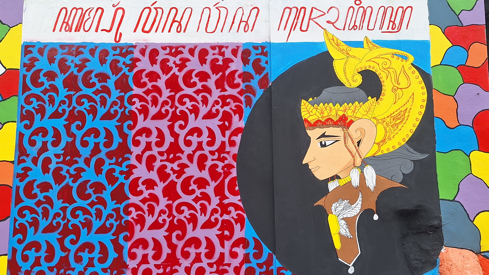

Malang City
Iconic Spot
The Iconic Lorong Bunga RT 6
English
While exploring the alleys of Kampung Warna-Warni Jodipan, you will discover Lorong Bunga, an iconic walkway adorned with colorful hanging flowers since 2016.
Bahasa IndonesiaSaat menjelajahi gang-gang Kampung Warna-Warni Jodipan, Anda akan menemukan Lorong Bunga, gang ikonik dengan atap bunga hias berwarna-warni sejak 2016.
Scroll